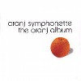
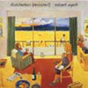

strange music page
* * * 2002.7
-2002.7.28 FRF'02 (1/3)
#フジロック'02の3日目行ってきました。
たまにはこーゆーのにも行っておかなきゃとか言う気持ちで。日焼けと人ごみと轟音と、でもやっぱ楽しかったです。何がって、あーゆー雰囲気が。
♪四人囃子/一触即発
-2002.7.25 ちゃくら
#ボーナストラック入りで再発。
♪ちゃくら/おはよーみなさん
-2002.7.21 久地→登戸
#で昼過ぎからj-u-nさんの家にお邪魔してsasakidelicさんと、音楽鑑賞会。二日続けてweb絡みの人に会うってのも非常に珍しいんですけど。
こんな感じの邂逅が有るんならネットも悪くないのかも。最近ちょっと疎遠な感じだったネット絡みの知り合いとか、徐々に復活しつつあるよな感じ。
その後久地から登戸に行って、最近こっちに引っ越してきた大学の友達にタウンページを与えてきました。そいつは大学出てから中南米→日本→西アフリカ→ヨーロッパという放浪な人だったりもしてます。
多種多様な人が居てて世の中（この場合の世の中はとりあえず自分のまわり）結構面白いななど、向ヶ丘遊園のモスバーガーでコーヒー飲みながら思ったりもしました。
♪GONTITI/マダムQの遺産
-2002.7.20 新宿→横浜
#新宿ディスクユニオンに久々にwarehouse/endless game of cat and mouseを・・・ほとんどジャケ買いです。
関連性無いんでしょうけど、rene aubleyにジャケット似てる。
#んでその後、横浜で花火大会を鑑賞。去年はパキスタンで入院中で見れなかったので。焼き鳥無しビール無しでしたけど。
更にその後sightさんの家におじゃまして、ディープな感じのネタで飲み。二部構成(メンバー入れ替え有り)、朝帰りました。
何だか、インドネシアのプログレとか聴いてて。もー凄かったです。
♪warehouse/endless game of cat and mouse
-2002.7.16 混同
#HMVのチャクラの再発の紹介文なんですけど....混同達郎ってヒドすぎる....しかも近藤達郎プロデュースじゃなくって、細野晴臣プロデュースです。もー滅茶苦茶。ボーナストラック目当てに買うけどさ。
あ、フジロックのチケット買いました、結局28日だけ行く事にしました。
そのチケット買ったクアトロで廃盤CD沢山売ってて、本当にただ廃盤なだけのCDがほとんどだったんですけど、岩城由美/NEO HAPPYなんてゲットしました。
♪岩城由美/うちに来て
-2002.7.13 アルコール
#一年ぶりくらいの友達とウチで飲み。なんか若干一名くらいトイレから出てこなくなっちゃったヤツとか居てて。あーもぅ、相変わらずというか、相変わらず駄目な感じで。
sasakidelicさんところのイベント面白そーだったな、次有るなら行ってみたい。
♪上野耕路/Chamber Music
-2002.7.10 my little chef
#今日、仕事帰りの東横線で見かけたオッサンの頭から血が流れてました。怖い。
台風来てたんで、早めに帰って久々にTVなんて見てました、このドラマなんですけど音楽が結構好きな感じでした、窪田ミナって方らしいですけど、どなたかご存知でしょうか？検索したけど見事に情報ゼロ。サントラ出ないかな？
♪flip flap/liv la la la la luv
-2002.7.9 www.marifukuhara.com
#とか何とか言ってたら福原まりのサイトがリニューアルしてました。個人的に物凄く嬉しいです。なんでもCD作ってるとか....
あと篠原りか（誰？）のライヴのサポートとか、行ってきます。
♪福原まりのページのswf
-2002.7.7 ほとらぴからっ
#下北沢La Canaでほとらぴからっのライヴ。
最近活動してるバンドの中では一番のお気に入りです。なんて言って説明したらいいのか分からないけど、不思議に幸せな感じの音楽。
なんてゆーか自分の中では KILLING TIME → FISHERMEN TIT TOT → ほとらぴからっ って感じかな？何々みたいとか言うことがどうしてもできない類の音楽。ポピュラリティ無いんだけど、マニアックな所でもそれ程人気が有るわけでも無いし。
ま、でもこの辺りが自分の中のツボです。 後は清水一登絡みとか、向島ゆり子とか、あらきなおみとか、横川理彦バンドとか、ワールドスタンダードとか、鈴木さえ子とか、戸田誠司とか、大熊亘とか。
こーやって並べて書くと、やっぱり80年代なのかな？
関係無いけど、下北沢のレコファンでHermeto Pascoal/Motreux Jazz Festivalを。
♪hotra piccara
-2002.7.3 HMV
#で、500円セールやってたんですよ渋谷のHMV、久々に買っちゃいました。

全部分かる人いるかな？
♪Jean-Luc Ponty/Civilized Evil
-2002.7.2

#えーとRobert Wyatt/Dondestan (revisited)を今日。
昨日は近所の中古屋でBruce HaackとHolgar Hillerを3分ほど見比べて、結局Holgar Hillerを